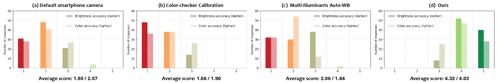
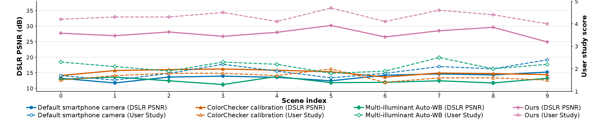
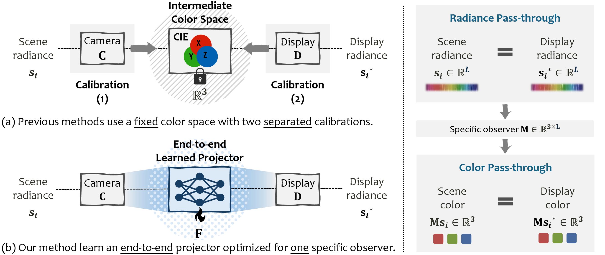
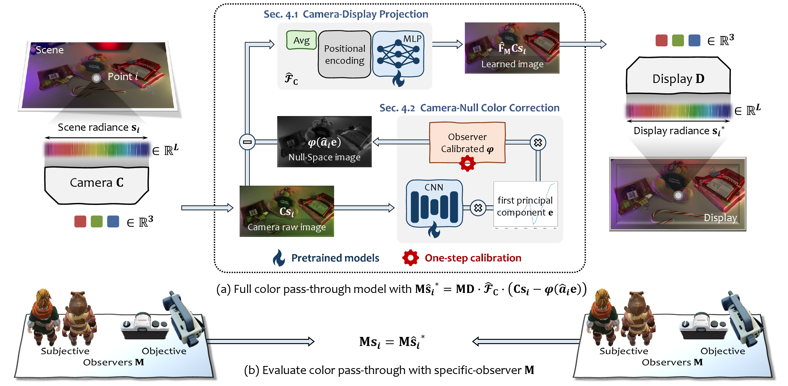
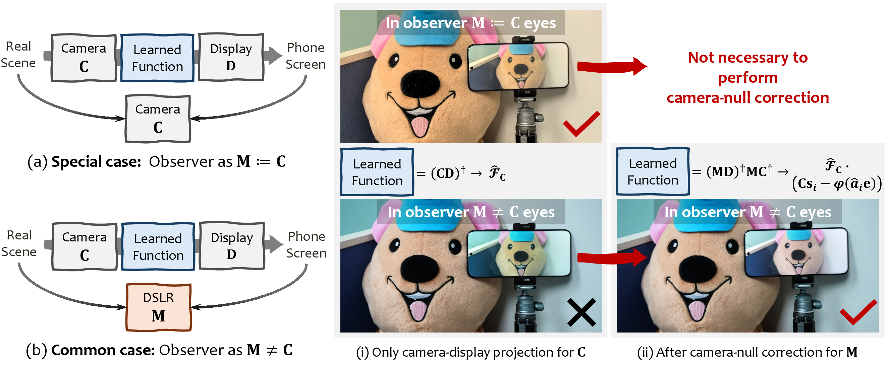
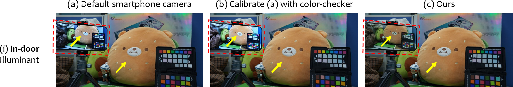

Commercial smartphone
A strong black-box ISP with production-grade white balance and color transforms.
Human evaluation
Ten participants calibrated once in a single scene, then rated brightness and color similarity across ten unseen scenes on a 5-point scale.

Quantitative evaluation
Evaluation uses 24 ColorChecker patches under ten color temperatures and five randomly sampled RGB-LED illuminants. Lower is better for ΔE and STRESS.
| Method | PSNR ↑ | ΔE mean ↓ | STRESS ↓ | |||
|---|---|---|---|---|---|---|
| Huawei | Xiaomi | Huawei | Xiaomi | Huawei | Xiaomi | |
| Default smartphone | 13.78 | 14.61 | 14.62 | 13.49 | 26.23 | 25.07 |
| ColorChecker calibration | 15.02 | 16.36 | 18.49 | 15.32 | 38.85 | 36.42 |
| Multi-illuminant Auto-WB | 12.84 | 13.92 | 17.84 | 17.08 | 31.12 | 30.05 |
| Ours | 28.65 | 29.10 | 5.18 | 4.79 | 17.48 | 16.12 |
Observer evaluation
DSLR preferences follow the same trend as human judgments across 10 diverse scenes.

Introduction & motivation
A short introduction to the problem setting, the limitations of traditional calibration, and the motivation behind Color Pass-Through.
The core idea
Conventional pipelines calibrate the camera and display independently, then connect them through a low-dimensional intermediate color space. We instead optimize the complete camera-to-display path for a specific observer.

Exact radiance pass-through is generally impossible: a three-channel camera cannot preserve every spectral dimension of a real scene. Color pass-through asks a more practical question—can the displayed result look the same to the observer?
Method
Two complementary learned components transform a captured image into a display image that better matches the original scene for the target observer.

A lightweight pixel-wise neural projector learns the nonlinear end-to-end mapping of a paired camera and display from re-captured RGB data.
A learned predictor models the dominant metameric-black component, while a compact coefficient adapts the correction to each observer.

Visual results
Select an illumination setting to compare the default smartphone pipeline, per-scene ColorChecker calibration, and our method.

Separated-view comparison
Citation
@article{li2026color,
title={Color Pass-Through via Camera-Display Coupling},
author={Li, Ruikang and Li, Molin and Wu, Jiarui and Wei, Zhe and Liu, Pengpeng and Xue, Tianfan},
journal={arXiv preprint arXiv:2607.12746},
year={2026}
}